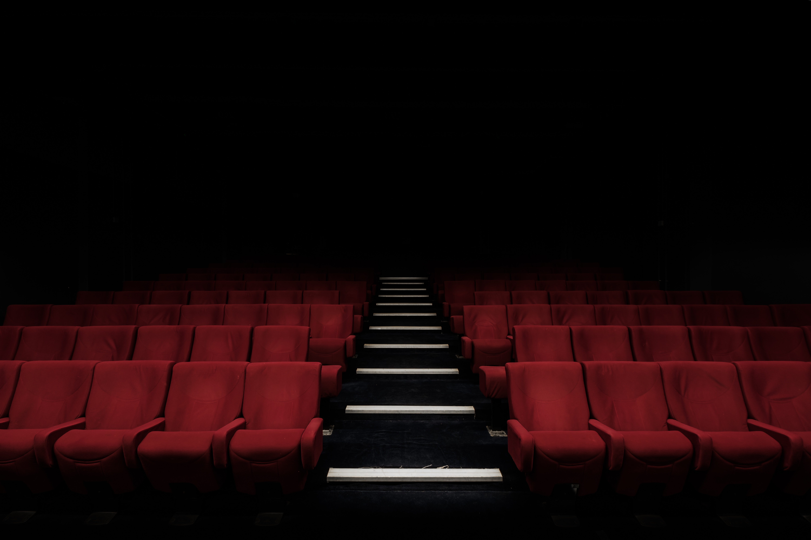

영화 탐색
무비 차트, 상세 페이지, 댓글, 좋아요, 공유 기능을 JSP 화면과 jQuery AJAX로 구성했습니다.
원본 앱의 기능 범위를 숨기지 않고, 포트폴리오에서 검토하기 좋은 단위로 재정리했습니다.
무비 차트, 상세 페이지, 댓글, 좋아요, 공유 기능을 JSP 화면과 jQuery AJAX로 구성했습니다.
시간표 조회, 극장 선택, 좌석 선택, 결제 전 단계의 예매 내역 흐름을 제공합니다.
회원가입, 로그인, 마이페이지, 아이디/비밀번호 찾기와 Kakao 연동 지점을 포함합니다.
공지사항, Q&A, 분실물 게시판과 댓글 API를 모듈별 controller/service/mapper로 분리했습니다.
이벤트, 멤버십, 스토어, 채용 페이지를 별도 화면과 스타일로 구성했습니다.
빌드 실패, 하드코딩 설정, 산출물 커밋 문제를 정리하고 문서화했습니다.
보여주기용 README만 붙인 것이 아니라, 실제 빌드 가능성과 공개 안전성을 먼저 회복했습니다.

원본 JSP 앱은 DB와 WAS가 필요한 서버 앱입니다. GitHub Pages에는 서버 없이 흐름을 볼 수 있는 mock 예매 데모를 제공합니다.
면접관이나 리뷰어가 바로 확인할 수 있는 경로입니다.